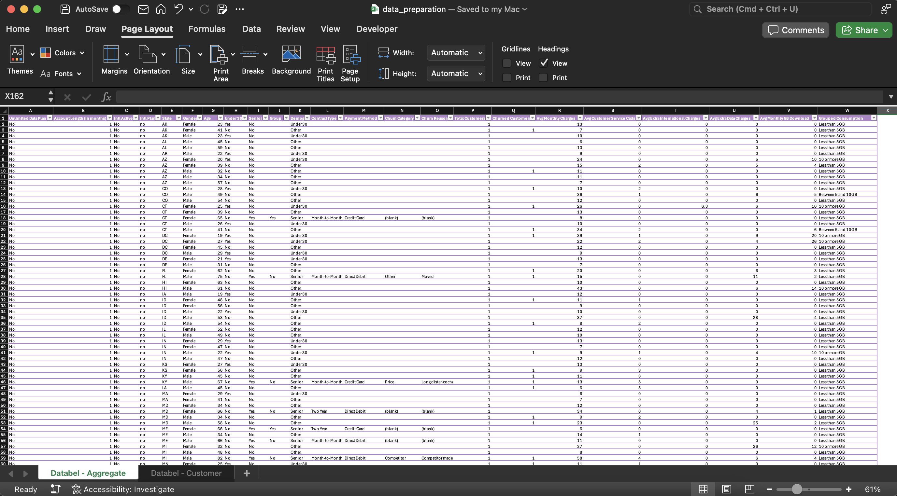
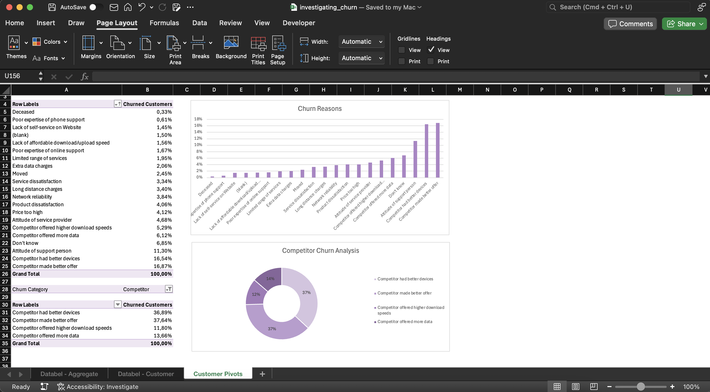
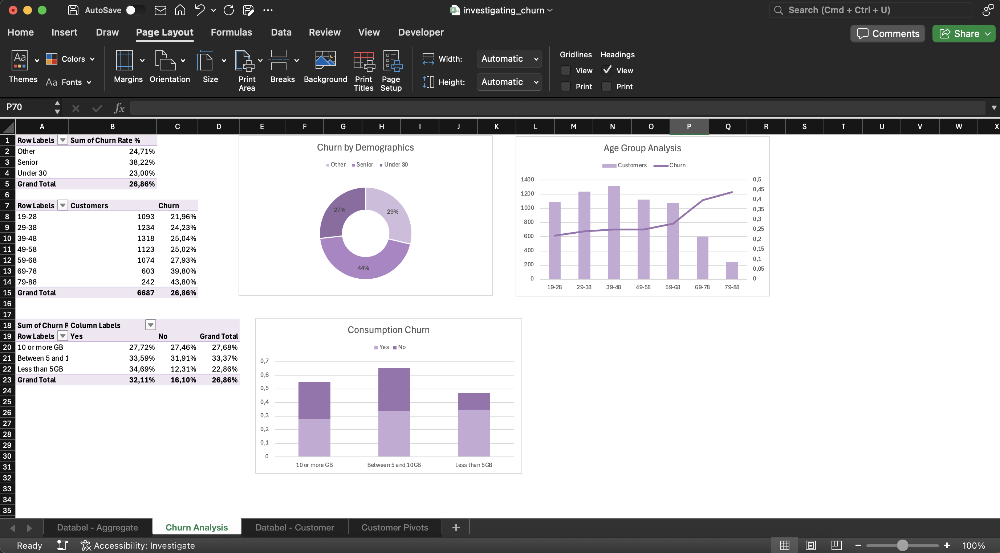
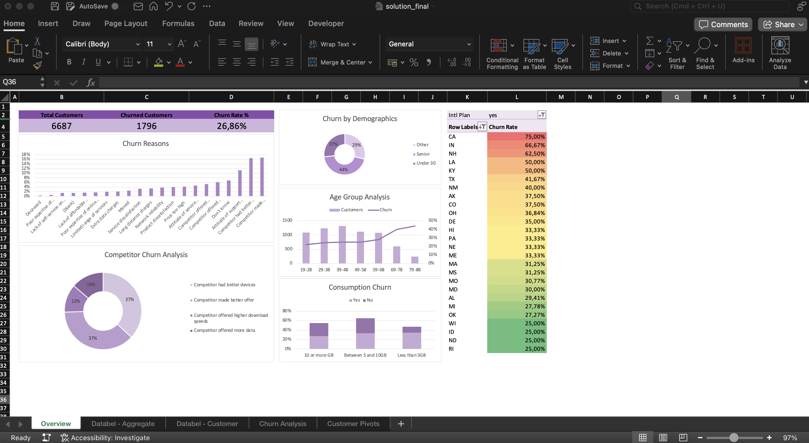

Detalhes do Projeto
Objetivo
Compreender os motivos que levam à saída dos clientes de um provedor fictício de telecomunicações, a DataBel, e oferecer insights estratégicos para melhorar a retenção.
Download no GitHub!Metodologia
Foi fornecido dois conjuntos de dados diferentes nas seguintes planilhas: Databel - Aggregate e Databel - Customer. Para iniciar o projeto, foi realizada limpeza de dados para garantir análises precisas. Isto incluiu a remoção de entradas duplicadas para evitar possíveis distorções no conjunto de dados. Além disso, os dados foram atualizados para serem mais interpretáveis, como uso de condicional na criação de colunas e transformação de dados para destacar informações críticas.
Fig. 1: Esta imagem mostra o conjunto de dados depois de limpo.
Analise
Agora que temos dados limpos, podemos realizar análises exploratórias de dados para obter insights e padrões nos dados.
Questionamentos Estratégicos:
Durante o projeto, foram levantados os seguintes questionamentos-chave para entender a dinâmica da rotatividade de clientes na DataBel:
- Quais são os principais motivos de rotatividade?
- Qual grupo demográfico apresenta a maior taxa de rotatividade?
- A hipótese sobre planos de dados ilimitados
- Qual a relação entre atividade internacional e rotatividade?
Foi identificado que a categoria mais significativa é a de clientes que saem devido a ofertas da concorrência. Em específico, foi analisado: Qual percentual de clientes abandonou o serviço porque "o concorrente fez uma oferta melhor"? Esse insight fornece um ponto de partida para uma análise mais aprofundada sobre a competitividade de mercado.
Fig. 2: Esta imagem mostra as tabelas dinâmicas com os principais motivos de desligamento.
A análise revelou que idosos são mais propensos a abandonar o serviço. Isso sugere a necessidade de um olhar mais atento sobre a idade dos clientes, permitindo personalizar estratégias de retenção com base nesse perfil.
A DataBel acredita que clientes sem um plano de dados ilimitado têm maior probabilidade de cancelar o serviço. Essa hipótese foi investigada, e os resultados mostraram como a ausência desse benefício impacta a fidelidade.
Fig. 3: Esta imagem mostra as tabelas dinâmicas que combinam faixas etárias e taxas de abandono.
Por fim, foi analisado o comportamento de clientes que fazem chamadas internacionais. A empresa estava curiosa para entender se pagar por um plano internacional influencia positivamente a retenção. Esse insight ajudará a DataBel a decidir se vale a pena incentivar ou ajustar esses planos como estratégia de fidelização.
Esses questionamentos orientaram as análises e trouxeram à tona valiosos insights que podem direcionar ações estratégicas para melhorar a retenção de clientes.
Principais descobertas
Para facilitar a visualização de todas essas informações, criei um painel que exibe todos os gráficos. Usando o painel, conseguimos determinar os seguintes insights:
Fig. 4: Esta imagem mostra o overview final da rotatividade de clientes.
- Churn label: Qual é a taxa total de rotatividade de Databel? 26.86%
- Churn reasons: Os 3 principais motivos de rotatividade são:
- Concorrente fez oferta melhor
- O concorrente tinha dispositivos melhores
- Atitude da pessoa de apoio
- Competitor Churn Analysis: Qual % de clientes saiu devido a "O concorrente fez uma oferta melhor"? 37.64%
- Churn by Demographics: Qual grupo demográfico tem a maior taxa de rotatividade? Senior
- Age Group Analysis: Qual faixa etária representa o menor número de clientes, mas a maior taxa de rotatividade? 79-88
- Consumption Churn: Qual é a taxa de rotatividade para pessoas em um plano ilimitado que consomem menos de 5 GB de dados? 34.69%
- Churn Rate: Parece que há um estado que tem clientes em um plano internacional que tem uma porcentagem particularmente alta de churners: CA